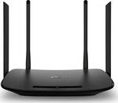
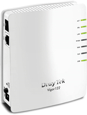
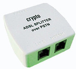
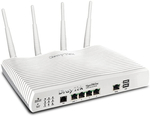

DSL List
-

TP-LINK ARCHER VR300 AC1200 VDSL/ADSL MODEM ROUTER (product code: 011) 49.90 €
The Archer VR300 takes full advantage of its Wi-Fi capabilities by providing combined dual-band Wi-Fi speeds of up to 1200Mbps
-
TP-LINK M7200 4G LTE MOBILE WI-FI (product code: 012) 62.30 €
The M7200 supports the latest generation of 4G FDD/TDD-LTE networks, enabling you to have Wi-Fi with you in most countries and regions.
-

DRAYTEK VIGOR 122 TRIPLE-PLAY ADSL2/2+ MODEM ROUTER ANNEX B (product code: 013) 79.50 €
The DrayTek Vigor122 supports PPPoE / PPPoA relay (PPPoA to PPPoE bridge) and the firewall, router or all computers can connect directly to the Internet (your ISP), having full control of the ADSL connection.
-

CRYPTO ADSL SPLITTER OVER PSTN (product code: 014) 3.50 €
The DSL Splitter separates voice from data allowing their simultaneous transmission over a telephone line.
-

DRAYTEK VIGOR 2862AC DUAL WAN VDSL2/ADSL2+ WIRELESS MODEM/ROUTER ANNEX B (product code: 015) 449.90 €
Draytek's Vigor 2862 series of routers. It is the ultimate DSL Router that supports ADSL or VDSL and includes all the professional features that increase their security, and capabilities, making them ideal for any scenario.